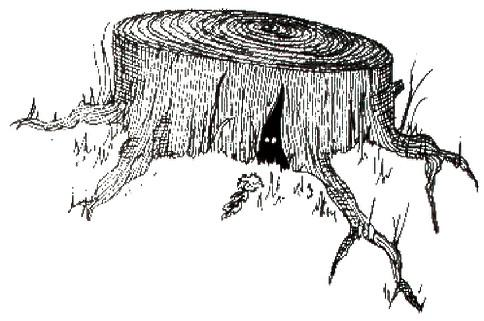

Köpek kıpırdamayınca, kalabalık önce fısıldamaya, sonra gülmeye başlamış. Kral'ın ilk iki marifetinin sonuçta sadece numaradan ibaret olduğundan kuşkulanıyorlarmış.
"Niye işe yaramıyor?" diye bağırmış Kral şarlatana, o da elinde kalmış tek katakulliye tutunmuş.
“İşte, Majesteleri, işte!” diye haykırmış, Babbitty'nin gizlenmiş oturduğu çalılığı işaret ederek. “Apaçık görüyorum, kendi kötücül büyüleriyle sihrinizin önünü kesen melun bir cadı! Tutun onu, birisi tutsun onu!”
Babbitty çalılıktan kaçmış ve Cadı Avcıları Bölüğü, onun kanına aç bir şekilde havlayan av köpeklerinin tasmalarını çıkarıp peşine düşmüş. Ancak ufak tefek cadı alçak bir çalılığa geldiğinde gözden kaybolmuş ve Kral, şarlatan ile bütün saraylılar diğer tarafa vardıklarında cadı avcısı köpekleri eğilmiş, yaşlı bir ağacın etrafında havlar ve eşelenirken bulmuşlar.
“Kendini ağaca dönüştürdü!" diye haykırmış şarlatan. Babbitty'nin tekrar bir kadına dönüşüp onu ihbar edeceğinden korktuğu için de, eklemiş: "Kesin onu, Majesteleri, kötücül cadılara böyle davranmak gerek!" Hemen bir balta getirilmiş ve ihtiyar ağaç, saraylılar şarlatanın tiz sevinç çığlıkları arasında devrilmiş. Ancak, tam saraya dönmeye hazırlanırken, gürültülü bir kıkırdamayla oldukları yerde kalmışlar.
"Budalalar!" diye bağırmış Babbitty'nin sesi, geri bıraktıkları kesik kütükten.
“Hiçbir cadı ya da büyücü ikiye kesilerek öldürülemez! Bana inanmıyorsanız, baltayı alıp Büyük Büyücü'yü ikiye bölün!”
Cadı Avcıları Bölüğü'nün Komutanı bu deneyi yapmaya hevesliymiş ama o baltayı kaldırır kaldırmaz şarlatan dizlerinin üstüne çökerek, bağıra çağıra merhamet dilemiş, bütün kötülüklerini itiraf etmiş. O zindanlara sürüklenirken, ağaç kütüğü her zamankinden de yüksek sesle kıkırdamış.
"Bir cadıyı ikiye bölerek, krallığının üzerine ölümcül bir lanet saldın!" demiş, taşlaşmış haldeki krala. "Bundan böyle, cadı ve büyücü kardeşlerime vereceğin her zarar sende böğrüne bir balta inmiş duygusu uyandıracak, o kadar ki bundan ölmeyi isteyeceksin."
Bunu duyunca Kral da dizlerinin üstüne çökmüş ve kütüğe, derhal krallığın bütün cadıları ile büyücülerini koruyan ve onların sihirlerini huzur içinde yapmalarına fırsat veren bir duyuru yayınlayacağını söylemiş.
“Çok iyi,” demiş kütük, “ama Babbitty'ye verdiğin zararı da ödemen gerek!”
"Ne olursa, aman ne olursa!" diye haykırmış budala Kral, kütüğün önünde ellerini ovuşturarak.
"Benim üzerime Babbitty'nin bir heykelini dikeceksin, o zavallı çamaşırcı kadının anısını yaşatsın ve sana daima kendi budalalığını hatırlatsın diye!" demiş kütük.
Kral hemen kabul etmiş ve ülkenin en önemli heykeltıraşıyla anlaşmaya, heykeli som altından yaptırmaya söz vermiş. Sonra mahçup olmuş kral ile bütün soylu erkek ve kadınlar saraya dönüp, kütüğü arkalarından kıkır kıkır kıkırdar halde bırakmışlar.
Arazi bir kez daha boşalınca, ağaç kütüğünün köklerindeki bir delikten dişleri arasına bir asa sıkışmış, iri ve bıyıklı bir tavşan kıvrılarak çıkmış. Babbitty araziyi zıplayarak terk etmiş, çok uzaklara gitmiş ve ondan sonra o ağaç kütüğünün üstünde çamaşırcı kadının altın bir heykeli hep durmuş, o krallıkta bir daha hiçbir cadı ya da büyücüye de eziyet edilmemiş.